Model Providers
BetaChoose how Codex and Claude reach models: the official login, or your own OpenAI, Anthropic, DeepSeek, OpenRouter or custom gateway keys. Keys stay on the daemon and are never shown back.
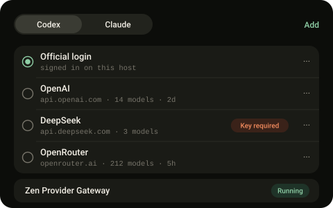

Open source · self-hosted · Android and iOS · beta
Zen is a phone app and a small daemon on your own computer. Every coding agent and shell there becomes a Session you can read as chat, drive as a live terminal, or hand to a Brain that splits the work.
01 · Sessions
claudecodexcursor-agentgrokpiopencodeChat works with these six. Any other command still gets the terminal. One authenticated CLI is enough.
02 · Brain
Brain is a long-running agent on your computer. It writes each part of a goal down as durable Work, picks a Worker for it using routing.md, a few lines of Markdown it rewrites when you state a preference, and reads every result before closing it. Workers are ordinary Sessions, so you can open any of them and take over. zen brain use claude moves Brain itself to another client without losing the thread.
03 · Instruments
Everything below reads from the server you are connected to, and only that one. The dashed outlines in each drawing are controls.
Choose how Codex and Claude reach models: the official login, or your own OpenAI, Anthropic, DeepSeek, OpenRouter or custom gateway keys. Keys stay on the daemon and are never shown back.

See which Skills and Agent Plugins your agents load on this server, where each copy came from, and remove one exact copy.
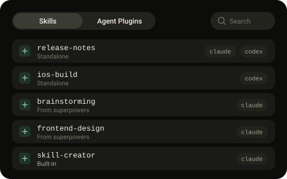
CPU, memory, disk and pressure on the host, and which Worker, Brain, container or app is using them. A Worker left behind shows as Residual, with its last status.
Connect Linear, Notion, GitHub, Slack or Google Workspace with each service's own sign-in, or your own MCP and OpenAPI services. Brain reads by default; changes are a separate switch. First-time sign-in is not ready for every service yet.
Tokens, sessions and cost per model from your agents' own history. Reported charges, estimates and unknowns are marked apart; a missing price stays a dash.
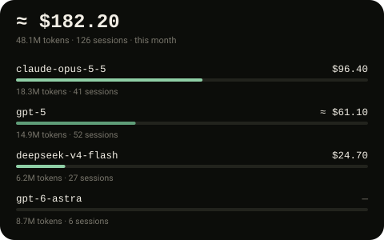
Events, reminders and deadlines, plus scheduled actions: at the set time an agent runs the instruction as visible Work and posts the result to the Brain thread it came from.
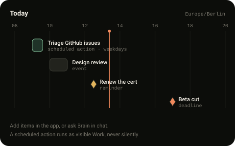
Every port your Sessions opened, grouped by project. Open it, jump to its terminal, or share it for a while through a Cloudflare Quick Tunnel.
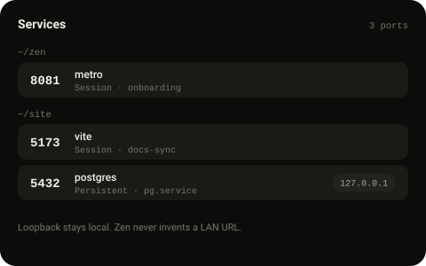
Your phone buzzes when a Session is blocked, fails or finishes, and stays quiet otherwise. Telegram is a second way to talk to the same Brain.
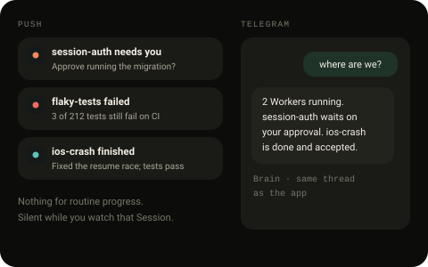
04 · Ownership
zen devices revoke cuts one off.
Unattended means trusted. Several default executor commands bypass approval prompts so agents can work while you are away. On a machine with secrets or production access, use the safe profile from executor risks.
05 · Install
Linux (amd64, arm64), WSL2 or an Apple Silicon Mac, with tmux and one authenticated agent CLI.
curl -fsSL https://raw.githubusercontent.com/daoleno/zen/main/install.sh | shVerifies the release checksum. No sudo, no telemetry, no agent CLIs installed for you.
zen doctor && zen --lanThen run the zen pair command it prints. Away from home, use Tailscale or zen pair https://your-origin.
Android: the arm64 APK on GitHub Releases. iOS: build from source; a TestFlight preview is awaiting Apple review. Scan the code and you are in.
Beta. Plugins are a preview. Zen Link relay is source only; no hosted relay is operated. Known issues: release blockers.